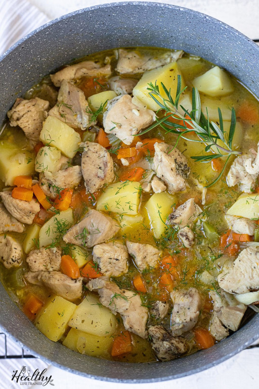

Click here to return to the homepage.
Chicken stew
This dish can contain whatever ingredients you like.

Ingredients
- Chicken
- (if you want to have a more gravy-like consistency) an equal amount of oil/butter and flour.
- Dry flavoring like salt, herbs etc
- Wet flavoring like soy sauce, vinegar, etc
- Vegetables, potatoes, any other add-ons
Steps
- Precook the chicken first if you want it to have a precooked consistency.
- Have a big pot of water. Alternately, roux.
- Throw whatever you want in the pot. If you put the chicken in early, it'll be nice and soggy but the flavor might escape the chicken into the broth. If you put the chicken in later, it'll have a more conventional texture.
- Put flavorings in to taste.